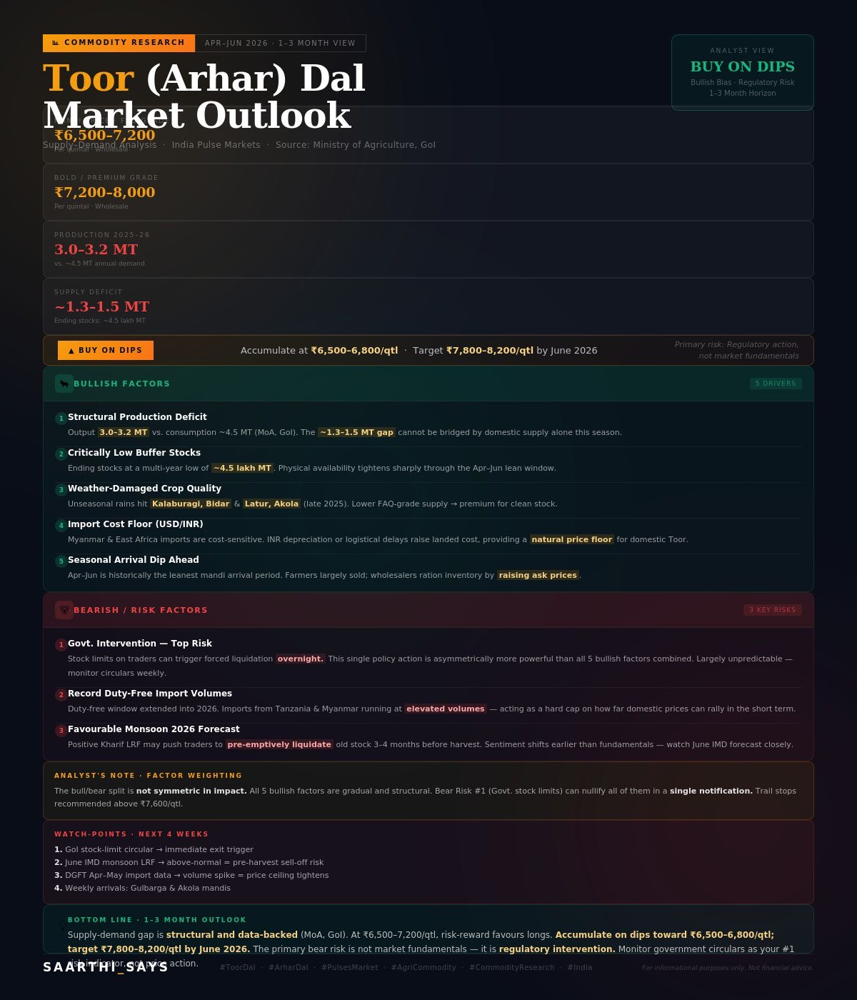

Real-time prices for pulses, cereals & commodities. Expert market insights to help farmers and agribusinesses make smarter trade decisions.
Comprehensive solutions for farmers, traders, and agribusinesses across India.
Real-time mandi prices for all major pulses, cereals, and agri-commodities sourced from key mandis across India.
Direct sourcing and trading of quality-graded agricultural produce — Toor Dal, Chana, Moong, Wheat, Rice, and more.
In-depth commodity outlooks with supply-demand analysis, seasonal forecasts, and actionable buy/sell recommendations.
Bulk procurement solutions for food processors, wholesalers, and institutional buyers with quality assurance.
Advisory on import logistics from Myanmar, Tanzania, East Africa, and export opportunities for Indian agri-produce.
Direct consultations helping farmers decide optimal selling windows based on market cycle, MSP, and seasonal patterns.

Your saarthi (companion) in every agricultural trade decision.
Deep domain knowledge across pulses, cereals and commodity markets.
Comprehensive coverage of all major pulses, cereals, oilseeds and spices.
A trusted network of farmers, wholesalers, processors and exporters.
Mandi data from Gulbarga, Akola, Latur, Bidar and all key trading hubs.
Wholesale mandi prices across India's key trading hubs. All prices in ₹ per quintal.
⚠️ Prices are indicative and for informational purposes only. Contact us for actual trade quotes. Last updated: April 10, 2026.
In-depth analysis to support your trading decisions. Updated quarterly.
Want personalised commodity reports and trade alerts for your specific needs?
Contact Our Research Team →Whether you're a farmer looking to sell, a trader seeking price intelligence, or a business in need of agri-procurement solutions — we're here to help.
Available Mon–Sat, 9AM–7PM IST
Gulbarga · Akola · Latur · Bidar · Mumbai · Delhi
Within 24 hours for all inquiries